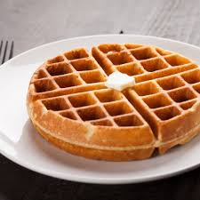

|
Ying Yang "La dualidad del sabor, el balance del placer" |
"Waffles"

| Tipo de Waffle | Base | Toppings Dulces | Toppings Salados | Precio |
| Waffle Clásico | Tradicional | Miel, mantequilla, azúcar glass | No aplica | 45 |
| Waffle con frutas | Tradicional | Fresas, plátano, arándanos, crema batida | No aplica | 60 |
| Waffle Chocolate | De chocolate | Nutella, chispas, crema batida, cerezas | No aplica | 65 |
| Waffle con Helado | Tradicional | Bola de helado, jarabe, nueces | No aplica | 70 |
| Waffle con tocino y Miel | Tradicional | Miel, jarabe de maple | Tocino crujiente | 68 |
"Papas locas"

| Tipo de Papas Locas | Base | Toppings Dulces | Toppings Salados | Precio |
| Papas clásicas | Papas crujientes | No aplica | Valentina, limón, sal, chile en polvo | 35 |
| Papas con chamoy | Papas crujientes | Chamoy, tamarindo líquido | Miguelito, limón | 40 |
| Papas con queso | Papas crujientes | No aplica | Queso amarillo fundido | 45 |
| Papas con salchicha y queso | Papas crujientes | No aplica | Salchicha picada, queso fundido, salsas | 50 |
| Papas con todo | Papas crujientes | Chamoy, tamarindo líquido | Cacahuates, salchicha, cueritos, zanahoria, jícama, queso, salsas | 70 |
Hecho por: Santiago Elhian García Hernández - 3BG1